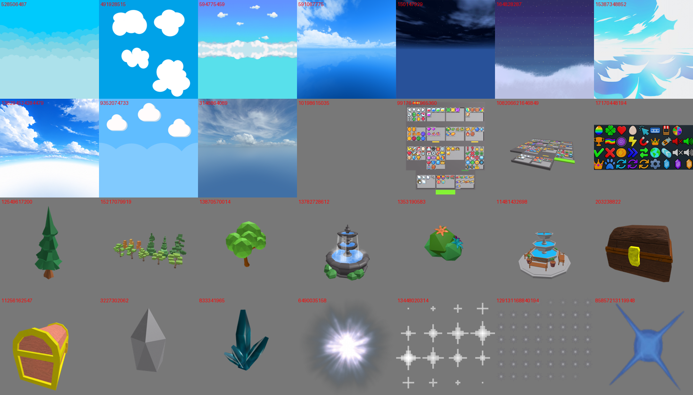

🛍️ Ce que j'ai trouvé dans la boutique Roblox
Ce sont des propositions : rien n'est changé dans le jeu. Tout est gratuit. Chaque modèle a été ouvert et vérifié : aucun script caché (les rares scripts trouvés ne sont que des commentaires, je les supprimerai). Les copies douteuses ont été écartées, dont de faux comptes « Roblox » qui imitent le compte officiel avec des caractères invisibles.
Attention au style : ton jeu est en briques à picots (style Lego). Les arbres et la fontaine « low poly » de la boutique ont des facettes lisses : ils peuvent jurer à côté de nos briques. Les icônes, le ciel et les effets n'ont pas ce problème, c'est là que le gain est le plus sûr.
⭐ Mon top 5 (impact / effort)
- 1. Les icônes de l'interface (pack « Simulator Icon Pack », 125 icônes dans le même style) : gemmes, pièces, œufs, chance, vitesse, boutique, cadenas, trophée, index… à la place des emojis. L'interface ferait tout de suite « vrai simulateur ».
- 2. Un ciel cartoon pour le jour et un ciel étoilé pour la nuit : gratuit pour le téléphone, changement immédiat.
- 3. Des étincelles (images animées) pour l'éclosion, le coffre, les gemmes et les étoiles filantes.
- 4. Une gemme 3D à recolorer pour la cascade de gemmes et les butins.
- 5. Le coffre au trésor « briques et or », très proche de notre style.
1. Ciels (un seul objet, rien à charger en plus)
conseilléCiel cartoon (bandes de nuages)
Cyan plat avec des nuages en couches. Le plus proche de notre style.
conseilléCiel cartoon (nuages ronds)
Bleu clair, nuages tout ronds : très « simulateur ».
Ciel dégradé + nuages à l'horizon
Va bien avec des îles au-dessus de la mer.
Ciel style anime
Très joli, mais plus « peinture » que briques.
Ciel bleu vif, gros nuages
Le plus audacieux ; peut-être trop plat.
conseilléNuit étoilée (pour la nuit)
Dégradé violet-bleu étoilé au-dessus d'une mer de nuages : parfait avec les étoiles filantes.
2. Icônes de l'interface

conseilléSimulator Icon Pack (125 icônes)
Gemmes (une, tas, sac, coffre), pièces, œufs, étoiles, boutique, inventaire, trophées, réglages, cadenas, vitesse, chance (3 niveaux), renaissance, index, créatures, téléportation, cadeaux, quêtes… Pas d'icône château ni carte.
Pack « Flibpook » (36 icônes)
Icônes épaisses à contour : trèfle, carte du monde, couronne, roue… Complète le pack 1 (trèfle, carte).
3. Effets (étincelles, lueurs)
conseilléÉtincelles animées
Petites étoiles à 4 branches qui scintillent : éclosion, gemmes, coffre (existe aussi en jaune).
conseilléÉclat d'étoile
Grosse lueur douce : apparition d'une créature rare, tête des étoiles filantes.
Reflet en croix
À teinter selon la rareté ; reflet sur les néons.
Poussière de fée
Petits points qui s'éteignent : traînée de la cascade de gemmes.
4. Objets 3D
conseilléGemme à facettes
Une seule pièce, très légère, à recolorer : cascade de gemmes, butins, gemmes au sol.
conseilléCoffre briques et or
Très proche de notre style ; 4 pièces.
Amas de cristaux
Décor des falaises et des îles.
style ?Fontaine low poly
Fontaine ronde avec bancs et pots pour la place. Facettes lisses : à voir à côté de nos briques.
style ?Arbre cartoon
Arbre vert à facettes, bien coloré.
style ?Pack d'arbres
Petits arbres, sapins et souches variés pour les îles.
Toutes les images d'un coup
